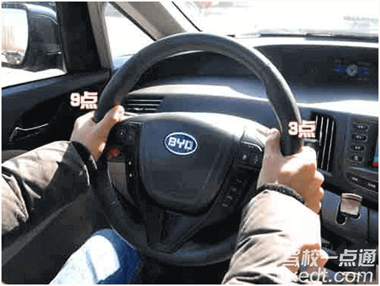
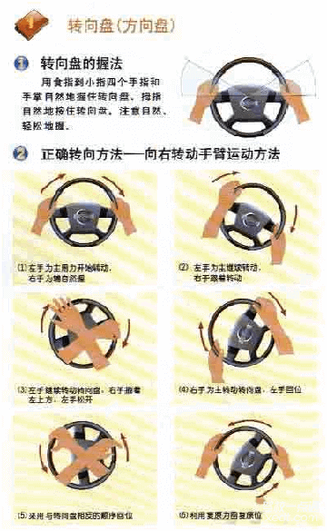

方向盘
方向盘是汽车操纵行驶方向的轮状装置，其功能是将驾驶员作用到转向盘边缘上的力转变为转矩后传递给转向轴。
操作步骤
1左右手分别握住方向盘9点钟和3点钟位置。

2左手为主用力开始转动，右手为辅自然握。左手为主继续转动，右手跟着转动。左手继续转动转型盘，右手握着左上方，左手松开。
3右手为主转动转向盘，左手回位，然后采用与转型盘相反的顺序回位。

4利用复原力回复原位。
温馨提示
调整好座椅，不要抱着方向盘操作或半躺着操作离方向盘太远。 行驶中，除操作需要外，不要长时间单手操作，也别将手长时间搁在排挡上或窗框上。 转动方向盘时，不可用力过猛，急打急回，车辆停住后不要转动方向盘。 在颠簸路段上行驶时，双手要握稳方向盘，以防方向盘失控而导致事故发生。